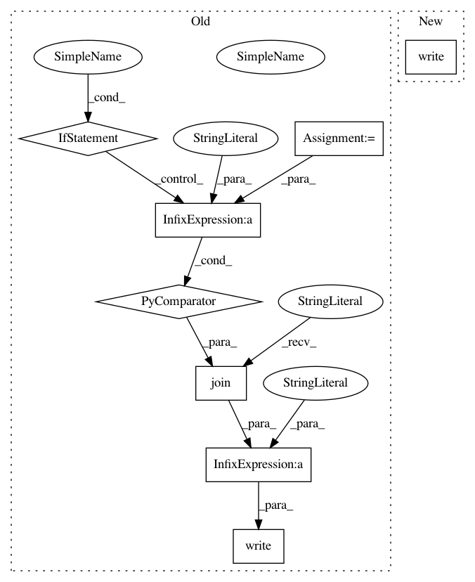

91184b6bdcdbce3a37cc91a54801b98356910849,theanolm/commands/score.py,,_score_text,#Any#Any#Any#Any#Any#Any#,78
Before Change
continue
seq_word_ids = word_ids[:, seq_index]
output_file.write("////// Sentence {0}\n".format(num_sentences))
seq_details = [str(word_id) + ":" + str(logprob)
for word_id, logprob in zip(seq_word_ids, seq_logprobs)]
output_file.write(" ".join(seq_details) + "\n")
output_file.write("Sentence perplexity: {0}\n\n".format(
numpy.exp(-seq_logprob / seq_length)))
output_file.write("Number of words: {0}\n".format(num_words))
After Change
history.append("...")
else:
history = seq_class_names[word_index::-1]
output_file.write("log(p({0} | {1})) = {2}\n".format(
seq_class_names[word_index + 1],
", ".join(history),
seq_logprobs[word_index]))
output_file.write("Sentence perplexity: {0}\n\n".format(
numpy.exp(-seq_logprob / seq_length)))
output_file.write("Number of words: {0}\n".format(num_words))
In pattern: SUPERPATTERN
Frequency: 3
Non-data size: 8
Instances
Project Name: senarvi/theanolm
Commit Name: 91184b6bdcdbce3a37cc91a54801b98356910849
Time: 2015-11-22
Author: seppo.git@marjaniemi.com
File Name: theanolm/commands/score.py
Class Name:
Method Name: _score_text
Project Name: merenlab/anvio
Commit Name: a5bf764eb01a3e213c8f10832ba4bbf55ceedf1b
Time: 2020-01-19
Author: a.murat.eren@gmail.com
File Name: anvio/utils.py
Class Name:
Method Name: gen_NEXUS_format_partition_file_for_phylogenomics
Project Name: RaRe-Technologies/gensim
Commit Name: 1aa7e115fcf87b443373c14b7b2f3dd2e3383584
Time: 2011-02-19
Author: radimrehurek@seznam.cz
File Name: src/gensim/corpora/svmlightcorpus.py
Class Name: SvmLightCorpus
Method Name: saveCorpus